FTS Data Explorer
FTS Data Explorer is a multiplatform desktop application for processing and exploring raw data from FTIR spectrometers. It is designed to work as fast as possible and be the one-stop shop for extracting useful insights from massive datasets produced in a lab. The application does not support any particular spectrometer but is aimed mostly at DIY instruments. Full processing chain is supported, from raw voltages recorded from detectors to absorbance plots and data comparison. Incompatible data sources are loaded using standardized data adapters written in Python. The user is free to add new adapters without the need to modify the application binary itself.
1. Overview
FTS Data Explorer is a desktop application for analysis of Fourier-transform spectrometer data: it takes raw measurements in, turns them into spectra, runs the standard analyses, and keeps the results together in a single h5 file. It works with files from lab-built and commercial instruments and it is meant for day-to-day laboratory work. Fast check for odd measurements, finding the optimal processing setting, preparing a series of scans for averaging, or investigating how stable an instrument is over time. All without writing a new script for every question. The application does not acquire data directly from the instrument - all measurements must arrive as h5 files.
Everything is organized around one container, the workspace. A workspace is a single
HDF5 (.h5) file that holds the
measurements, their metadata and comments, the processing settings, the computed results,
and - for multi-dataset work - experiments and batch recipes. Data produced by other
software (vendor CSVs, text dumps, exported spectra) enters through the built-in Conversion
screen, which runs small converter scripts (in Python) and writes a compliant workspace file
(Section 6). Because the workspace records the complete state of the work, reopening it
restores the session exactly as it was left; Section 4 explains what is stored where.
What you can do with it:
- Inspect measurements. Overlay up to five interferograms or spectra, zoom and pan them, and read exact values with the tracking cursor (Sections 8–10).
- Compute spectra. Correct the X axis with the Hilbert transform or peak finding, choose an apodization window and zero-padding, and display the result in cm⁻¹, µm, or THz (Sections 7 and 11).
- Run the standard analyses. Average spectrum, spectral SNR, 100% transmittance with ASTM E1421-compliant or custom energy ratios, and Allan variance for stability assesment (Sections 12–15).
- Compare datasets. Comparator experiment can overlay all types of artifacts calculated from several datasets and compute difference curves.
- Calculate absorbance/transmittance spectra of samples. Absorbance experiment allows to freely select reference and sample spectra from any available dataset and overlay curves from multiple experiments. Residual calculation is supported.
- Check spectral features. Mark HITRAN band markers for eight common gases on the Spectrum View and Average plots (and in spectral experiment viewers) (Section 16).
- Export and archive. Write any computed curve to CSV and save the complete state back into the h5 workspace (Section 17).
The application runs locally and ships as a single executable for Linux and Windows. No installation required. The Windows build is fully static; the Linux build uses the system OpenGL and X11 libraries. Calculations are multithreaded, and the worker count is configurable in the Settings menu to adjust the system load.
If you are opening the application for the first time, continue with Section 2 (Workflow) and Section 3 (Welcome screen). If you already have a workspace file, Section 6.2 explains how to open it, and Section 8 covers the file list.
2. Workflow
The application is built around a simple workflow: raw measurements come in, processing settings are tuned by hand on one dataset, and the same method is applied to the remaining datasets using the batch processing feature. Finally, outputs are analyzed or exported and the workspace, with all its settings and calculation results, is saved back to the h5 file.
- Convert the raw data. Measurements are read from the application's HDF5 workspace format. Files from other sources are converted by a converter script on the Conversion screen. See Section 6.
- Load the workspace. Open the file in a tab; its measurements, metadata, and saved settings are restored with it.
- Tune the processing. Work on one dataset manually - X-axis correction, apodization, zero-padding, axis ranges - until the spectra look right. See Sections 7, 10, and 11.
- Replicate the method. Capture the settings that worked into a batch recipe and apply it to the other datasets, so that every file is processed the same way. See Section 19.
- Extract the information. Use the analysis panels (average spectrum, SNR, 100% transmittance with energy ratios, Allan variance) and the cross-dataset experiments. See Sections 12–15 and 20–22.
- Export the results. Write any curve, spectrum, or table to CSV for reports and further analysis. See Section 17.
- Save the workspace. The complete state - inputs, settings, comments,
results, experiments - is stored back into a single
.h5file for later access, archiving, or sharing.
Settings can be changed and results recomputed at any time. Because the workspace file records the whole state of an analysis, it can be reopened later, on this or another machine, and continued where it was left.
3. Welcome screen
When the application starts it opens the Welcome screen, where you choose a workspace to open or invoke the dataset conversion window.
The list of recent workspaces is split into two columns. "Recent Datasets", on the left, contains workspaces holding just a single dataset, i.e. a set of consequtive measurements captured during the same experiment. "Recent Multi-Workspaces", on the right, contains workspaces with multiple datasets and experiments. In general single-dataset files are archived measurements and multi-dataset workspaces are created to facilitate actual experiments like absorbance calculation or comparing different radiation sources.
Click a row to open it, or press ↑ /
↓ and Enter; ← and → switch between the two
lists. The × button next to a row removes it from the list without touching the
file. Rows for files that have moved or been deleted are greyed out and marked
(unreachable).
In the lower part of the screen (button strip and bottom bar):
Open .h5- open an existing workspace using the system file picker.Convert Dataset- open the dataset Conversion window.New Multi-Workspace...- create an empty multi-workspace container (Section 18).UI Size- quick access to the font scale setting.
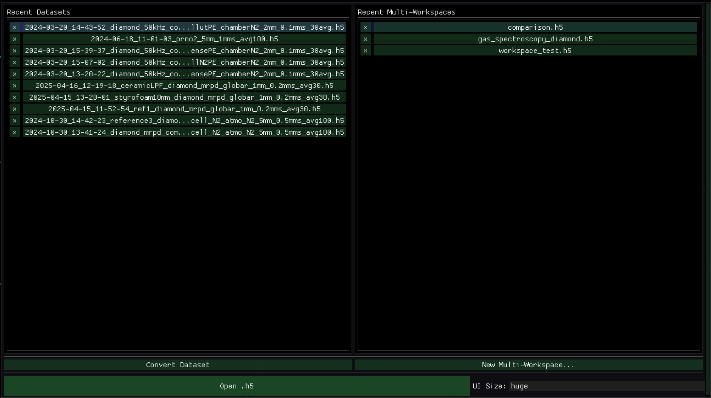
4. Workspace files and data storage
Everything the application produces is stored in HDF5 files - a binary, self-describing
container format widely used in scientific computing. It uses two different kinds of file storage that share the
.h5 extension: a single-dataset workspace and a multi-workspace container
(Section 18). The application tells the two apart by their content, not by the file name, so both open the same way - from the Welcome screen or File → Open Workspace (.h5).
4.1 What a workspace file contains
A workspace holds more than the measurements. It records the complete state of the work done on them, which is why a reopened dataset looks exactly as it was left:
- Measurements - raw interferograms (reference and primary) or precomputed spectra, and their timestamps.
- Metadata - the measurement configuration stored with the data, plus the comment and tags edited in the Metadata panel (Section 9).
- Processing settings and display state - X-axis correction, reference laser wavelength, apodization, zero-padding, detector sensitivity, axis units, plot zoom ranges, and the file selection.
- Computed results - spectra, average spectrum, SNR, 100% T, Allan variance, and the inputs they were calculated from.
- Experiments and recipes - Comparator and Absorbance setups with their saved results, and batch-processing recipes; these live in multi-workspace files.
4.2 Originals and derivatives
Everything in a workspace falls into one of two kinds. Originals are the measurements themselves: the interferograms or precomputed spectra created by an instrument. Derivatives are everything computed from them - spectra, average spectrum, SNR, 100% T, and Allan variance. The two kinds are treated differently:
- Originals are never removed automatically. Deleting one always asks for confirmation, and any result calculated from it is marked stale (Section 8).
- Derivatives can be removed at any time, because they can always be recomputed.
Strip derivativesin the Files panel clears all of them at once (Section 4.3).
When the inputs of a stored result change, the panel that displays it shows a
Stale data: source changed. overlay with a Recompute button.
How a save treats a stale result depends on the path:
Save(Ctrl+S) keeps it in the file as it is.Save As, and the save when closing a tab, drop stale results after a “Stale Data Will Be Dropped” confirmation.- The exit
Save Alldrops them without asking.
4.3 Stripping derivatives
Strip derivatives at the top of the Files panel removes every computed result
from the workspace in one action - spectra, average spectrum, SNR, 100% T, and Allan
variance - leaving only the measurements. This is the way to return a workspace to its raw state before a new
round of processing, or before sharing or archiving. Stripped workspaces take less disk space.
4.4 Archiving and sharing
Because a workspace is one self-contained file, archiving or sending a dataset is a matter of copying that file. The format is open and documented - see the single-dataset specification and the multi-workspace specification - so the data remains readable with generic HDF5 tools even where the application is not available. Multi-workspace files embed complete copies of their datasets (Section 18), which costs disk space but keeps experiments intact when source files are moved, renamed, or deleted.
Saving writes the file atomically, so an interrupted save leaves the previous version intact.
5. The interface
5.1 Menu bar
The menu bar appears once a workspace or multi-workspace is open. It has three menus.


File
| Item | What it does |
|---|---|
Convert Dataset... | Opens the Conversion screen (Section 6.3). |
Open Workspace (.h5)... | Opens an existing workspace in a new tab. Both single-dataset and multi-workspace files can be opened; the application detects which one it is. |
Close Workspace | Closes the active workspace tab. Only enabled while a workspace tab is focused. |
Save Ctrl+S | Saves everything that has unsaved changes: all open workspace tabs and all experiments. |
Save As... Ctrl+Shift+S | Writes the active workspace to a new .h5 file. |
Recent Datasets | Submenu with the most recently opened datasets. Entries whose file is missing are greyed out. |
Settings
| Item | What it does |
|---|---|
Display fps | Shows a small FPS counter in the top-right corner. |
Show timestamps | Appends the measurement time ([hh:mm:ss]) to file names in the Files panel, in the interferogram legend, and for precomputed spectra. |
Focus panels on hover | On by default. The docked panel under the mouse receives keyboard input (arrows, ESC, wheel) without a click; hovering changes input focus only and never switches between stacked dock tabs. |
Grid opacity | Slider that sets the brightness of plot grid lines, 0–100%. Applies to all plots. |
Restore layout | Rebuilds the default panel arrangement for the current tab. |
UI Size | Font scale: tiny, small, normal, large, huge. |
Accent | Colour of buttons, tabs and highlights: Green (default), Blue, Purple, Red, Brown, Cyan. |
Worker Threads | Number of computation threads: AUTO (default), 1, 2, 4, 8, 16. The pool is reconfigured immediately. |
Help
User manual opens this manual in the default system browser; the manual is embedded in the application, so it works without an internet connection. About shows infromation about the application.
5.2 Tabs
The tab strip at the top holds the Session tab, one tab per open workspace,
and one tab per experiment. The Session tab is always first and cannot be closed. The
»»» button at the end of the strip opens a list of all tabs. A tab whose
contents have unsaved changes is marked with *. Workspace and experiment tabs can be dragged to reorder them. Middle-clicking a tab closes it.
5.3 Panels and layout
Every workspace consists of docked panels, for example: Interferogram View, Interferogram, Spectrum, Spectrum View, Metadata, Export, or HITRAN Gas Markers. In many cases, the viewbox with the plot and its settings are split into separate panels, like in the case of Interferogram View (the plot) and Interferogram (the settings panel). Drag a panel by its title bar to move it, or drop it onto another panel to create a stacked group. The layout is remembered per tab type and per workspace, so each dataset reopens with the exact arrangement you left it in. If a layout gets into a state you don't like, use Settings → Restore layout.
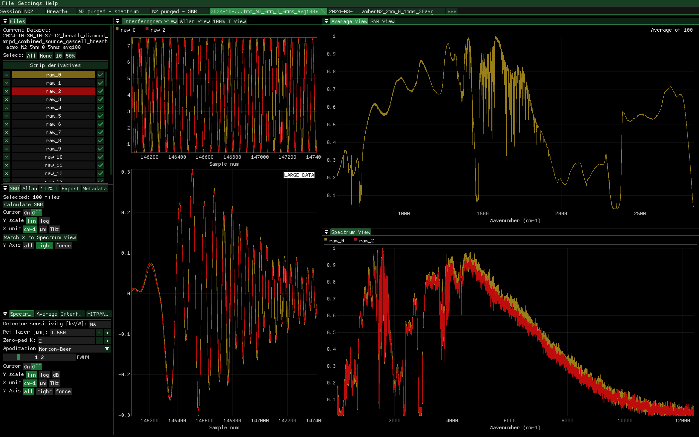
6. Getting data in
Opening an existing HDF5 workspace
Use File → Open Workspace (.h5), a recent entry, or the Open .h5
button on the Welcome screen. Files with the .h5 extension are opened as
workspaces; if the file contains a multi-workspace archive, it opens in the Session tab
instead. Opening a file that is already open just activates its tab.
Converting non-HDF5 data
Data that is not already in the h5 workspace format is converted with a converter script written in Python. If the converter follows the standard described in Section 26, then it can be invoked from this window. The Conversion screen is opened from the Welcome screen (Convert Dataset) or from the menu (File → Convert Dataset...).
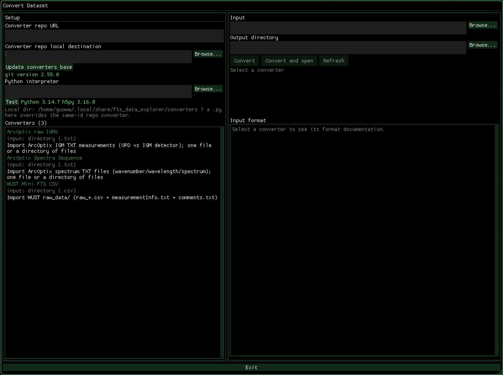
Setup
The Setup group configures where converters come from and which Python to use:
Converter repo URL- location of the standard converter collection. Defaults to the official GitHub repository.Converter repo local destination- where the collection is stored locally.Browse...picks a folder.Update converters base- clones the repository the first time, then pulls updates. Needsgit; the detected version is shown below the button.Python interpreter- interpreter used to run scripts, with aBrowse...button and aTestbutton. The detected Python and h5py versions are shown below the row when the probe succeeds.
Banners at the top of the window report missing dependencies: without git
updating is disabled, without Python or the h5py/numpy packages
conversion is disabled. The Refresh button only rescans installed converters -
it does not use the network. When a clone already exists, it is updated automatically at startup.
The automated Git repository handling is there for convenience but not required. The Converter
window can accept any directory containing converter scripts instead of a repo.
Running a conversion
- Select a converter from the list. Its description, expected input, and a format documentation will appear in the input format panel.
- Set the
Inputpath. Converters that expect a single file open a file dialog, converters that take a directory open a folder dialog instead. - Set the
Output directory. The output file name is derived from the input name (<name>.h5). - Click
Convert, orConvert and opento open the result in a workspace tab as soon as it is written.
The Log pane shows the last lines of converter output. If the conversion fails, the reason is shown in the banner area, for example Converter exited with code N or
Converted file failed validation: .... Press Exit when you are done.
7. Spectrum calculation
A spectrum is computed from the primary detector trace in a fixed sequence of stages. The chain below shows the complete data flow; every stage runs in order, and the user-facing stages are configured from the Interferogram and Spectrum panels (Sections 10 and 11).
Not every dataset runs the whole chain. A dataset with an already corrected axis skips the X-axis correction stage and uses its stored OPD axis. A dataset that contains precomputed spectra skips the whole process.
Spectra are recalculated in real time as settings change, so the chain can be tuned interactively while watching the result (Section 11).
8. Files panel
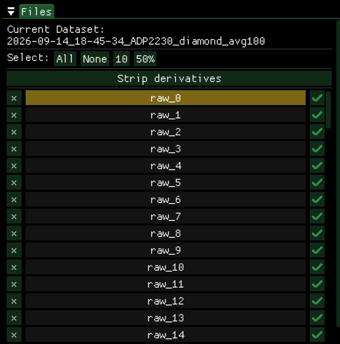
The Files panel lists the measurements in the current dataset. The header shows the dataset name, followed by selection helpers:
Select: All | None | 10 | 50%- set the checkbox (batch selection) for all files, none, the first ten, or the first half of the list.Strip derivatives- removes every computed result from the workspace (spectra, average, SNR, Allan, 100% T).
Each row contains a delete button (×), the file name, and a checkbox. Row
backgrounds match the plot colours of the currently displayed files. The colours are
assigned in the order the files are selected.
8.1 Selecting records
- Click a file to load it on its own, replacing the current selection.
- Ctrl+click toggles the file in or out of a multi-file selection (up to 5 files).
- Shift+click selects a range of files.
The checkboxes on the right are separate from the highlighted selection. They choose the
files used by the batch analyses (Average, SNR, Allan, 100% T standard deviation) and
by the Spectra from selected files export. All files are checked when a workspace is opened for the first time.
8.2 Deleting records
Clicking × (or pressing Delete) asks for confirmation in a Delete member? dialog that shows the workspace path of the entry (for example /igm_uncorrected_x/record_0). If other results
depend on the file, the dialog notes that they may become stale. Deletion is written to the
file only when you save the workspace.
9. Metadata panel
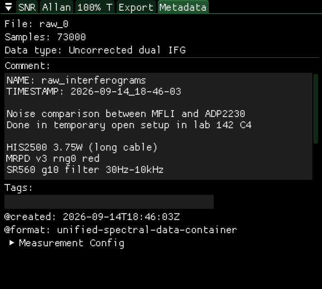
The Metadata panel shows the name of the first record from the dataset, the number of samples in the loaded data (the downsampled count when downsampling is on), and the data type of the current dataset - Precomputed spectra, Corrected single IFG, or Uncorrected dual IFG.
Comment:- a text note stored in the workspace. Comments are included in the archive and travel with the file.Tags:- a short single-line label field.@createdand@format- read-only attributes of the workspace.Measurement Config- a collapsible tree with the instrument and acquisition metadata (instrument, detector, acquisition card, laser, environment). Values are grouped by section. Precise content depends on the original dataset creator.
Comment and tag edits are only saved together with the workspace!
10. Interferogram panel
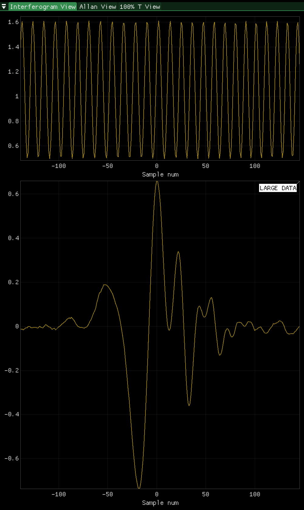
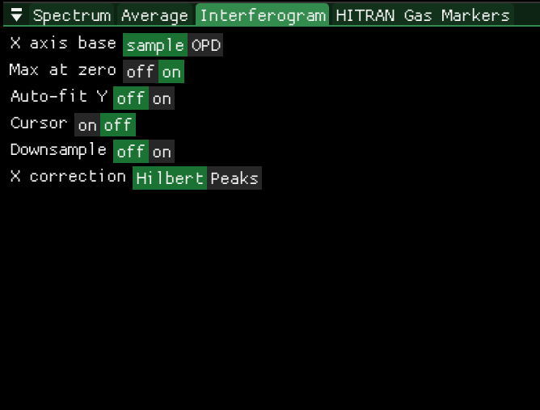
The view stacks two plots with a shared X axis: the reference detector on top (when the
dataset has one) and the primary detector below. The X axis shows the sample number or the
optical path difference (OPD [µm]), and Y shows detector voltage. All records selected in the Files panel are overlaid for easy comparison. The apodization window selected in the Spectrum panel is drawn as a cyan overlay on the primary plot.
10.1 Interacting with the plots
- Mouse wheel - zoom. In the interferogram and spectral plots only X is affected (Y is auto-fitted).
- Shift+drag - hold Shift and drag to mark an X range. When you release Shift, both plots zoom to it.
- ESC - reset the zoom.
- ← / → - pan by 10% of the visible range.
The same controls work in every plot panel (Spectrum, Average, SNR, Allan slice, 100% T, experiment viewers).
10.2 Large datasets
When the first loaded file has more than 50 000 samples in a detector, the corresponding interferogram plot switches to large-data mode: the primary plot is annotated LARGE DATA, ImPlot's built-in mouse interactions (wheel, pan, box-select) are disabled - the tracking cursor and Shift+drag range selection still respond, and keyboard panning and ESC still work - and anti-aliasing is switched off. With downsampling enabled (the default), long records are decimated for display and stay fully interactive. Spectra and OPD calculations always use the underlying full-resolution data for calculations. Downsampling is display-only.
10.3 Controls
| Control | Values | Meaning |
|---|---|---|
X axis base | sample / OPD | Display the X axis as sample index or optical path difference. For datasets with a corrected axis, sample is disabled. |
Max at zero | off / on | Shift X so that the centre burst lies at zero. Useful when comparing measurements with different burst positions. |
Auto-fit Y | off / on | off fits Y to all data, on fits Y to the visible X range. Default: on. |
Cursor | on / off | Tracking cursor: a vertical line with a readout box while the mouse hovers the plot. |
Downsample | off / on | Decimate long interferograms for display. Default: on. Turning it on or off reloads the selected files. |
X correction | Hilbert / Peaks | How the OPD axis is computed from the reference detector. Shown only for uncorrected datasets that have a reference channel. |
Peak promin. | 0.0–0.5, default 0.02 | Peak-finding threshold. Shown when X correction = Peaks. |
Peak markers | off / on | Used for tuning the peak prominence setting. Marks detected reference peaks in the plot. Shown when X correction = Peaks; the control is only active when the X axis is in sample mode. |
Some of these controls have corresponding keyboard shortcuts: Ctrl+Y (auto-fit Y), Ctrl+A (max at zero), and Ctrl+D (downsample).
11. Spectrum panel
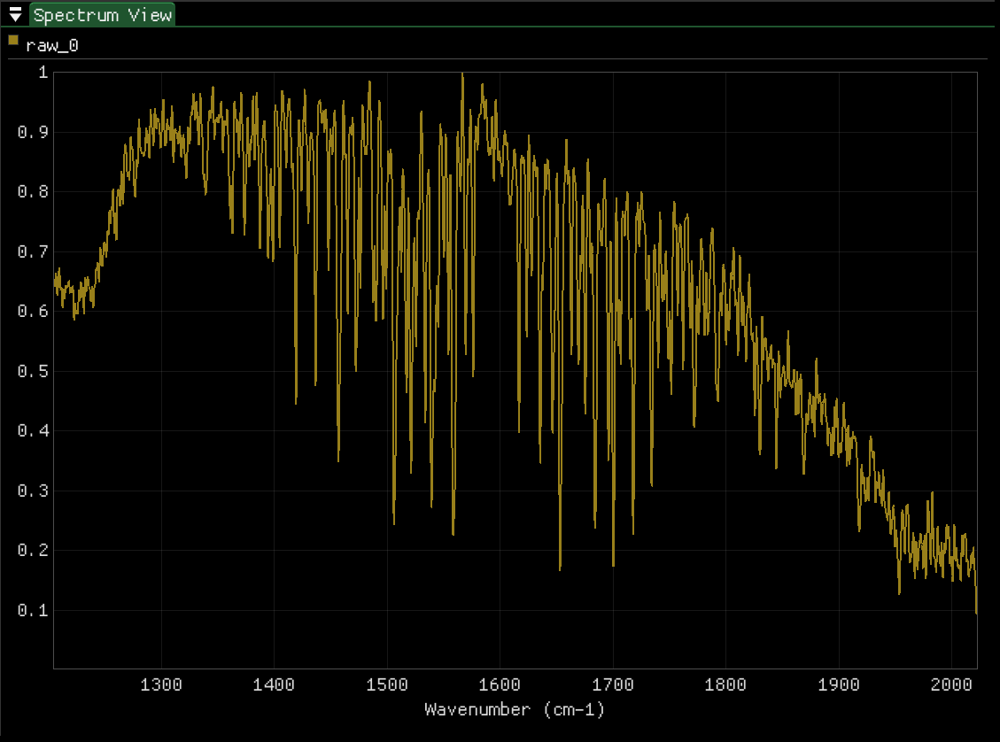
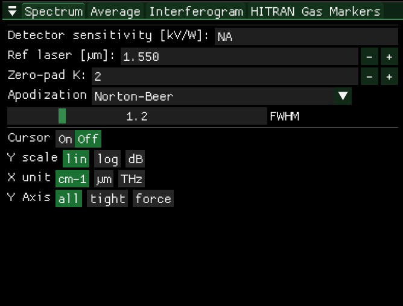
The Spectrum panel computes spectra from individual interferograms. The Spectrum View shows one curve per selected file allowing to compare up to 5 at once.
11.1 Settings
| Control | Meaning |
|---|---|
Detector sensitivity [kV/W] | Converts the spectrum from volts to watts. Enter NA (or 0) to keep the spectrum normalised so that its maximum is 1 (0 dB). |
Ref laser [µm] | Wavelength of the reference laser used for the OPD axis. Default 1.550 µm. Disabled for datasets that already have a corrected axis. |
Zero-pad K | Zero-padding factor; the transform has N×(K+1) bins and the plotted spectrum keeps the positive-frequency half, N×(K+1)/2 points. 0 disables padding. Default: 2. Disabled for precomputed spectra. |
Apodization | Window applied before the FFT. Ten windows are available; the window-specific parameter appears below the selector. |
Cursor | Tracking cursor with a combined cm⁻¹ / µm / THz readout. |
Y scale | lin, log, or dB. |
X unit | cm-1, µm, or THz. Changing the unit does not recompute the spectrum. |
Y Axis | all fits Y to all data, tight to the visible range, force locks Y to the min/max fields. |
Available apodization windows and their parameters:
| Window | Parameter |
|---|---|
Rectangular | Mode Sym / Asym, width 0.05–1.0 |
Gauss | Sigma 1.0–3.0 |
Triangular | - |
Norton-Beer | FWHM 1.0–2.0 |
Dolph-Chebyshev | Attenuation 50–160 dB |
Hamming | Alpha 0.36–1.0 |
Blackman-Harris | - |
Hann | - |
Happ-Genzel | - |
Kaiser | Beta 0.5–12.0 |
11.2 Recomputation
Spectra are recomputed automatically when a relevant setting changes (reference laser, zero-padding, apodization, X-correction method, or the data itself). The first computation for a file waits for the result. Later ones run in the background while the previous curve stays visible. Changing the X unit or the Y scale only redraws the existing curve. Recomputation of individual spectra should work in real-time when presented with reasonably-sized datasets.
For datasets that already contain precomputed spectra, the panel shows those spectra directly: zero-padding and apodization are disabled, and the reference laser value is ignored.
12. Average spectrum


The Average panel computes the mean spectrum of all files ticked in the Files panel
(at least one). Press Calculate average. A progress bar shows the state, and
the plot is labelled Average of N. The plot controls are
Cursor, Y scale (lin/log/dB), X unit,
Match X to Spectrum View (copies the Spectrum panel's unit and zoom range),
and Y Axis with the usual all/tight/force modes. The result is stored in the
workspace and used as a reference option by the 100% T and Absorbance panels.
If the checked files or the processing settings change after a calculation, the plot shows
a Stale data: source changed. overlay with a Recompute button. Hovering it lists what changed (up to four sources).
13. SNR
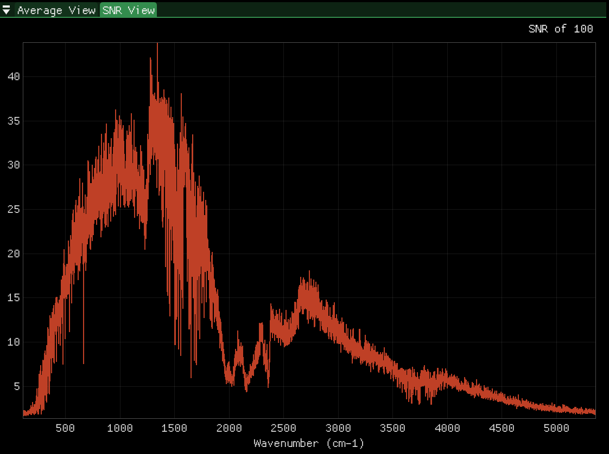
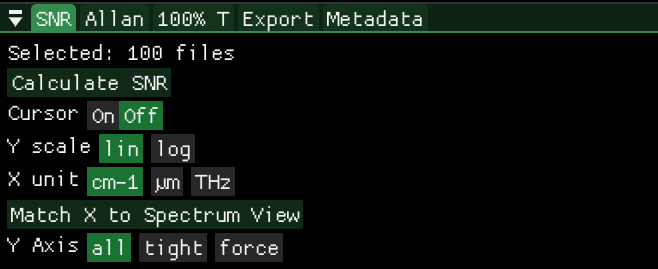
The SNR panel combines repeat measurements into a per-wavelength signal-to-noise ratio:
the mean spectrum divided by the sample standard deviation across files. At least two
files must be ticked in the Files panel. The header shows how many are selected. Press
Calculate SNR to compute. The Y scale offers lin and
log (no dB). The remaining controls match the Average panel. The result is
labelled SNR of N.
14. Allan variance
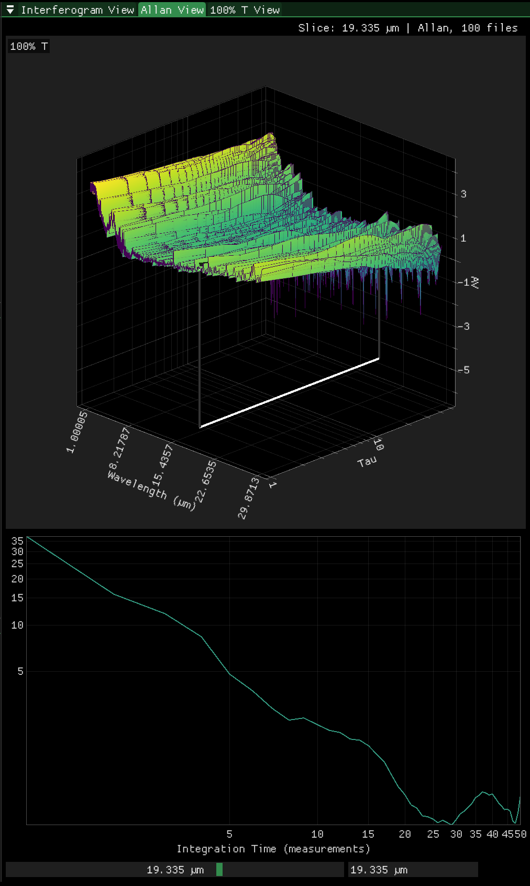
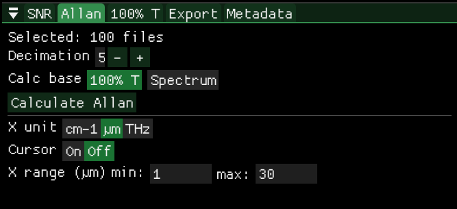
The Allan panel estimates the Allan-Werle variance as a function of integration time
(τ), either from each file's transmittance against the mean of the selected spectra (Calc base = 100% T) or from the raw spectra (Calc base = Spectrum). Integration time is replaced with the number of measurements to maximize compatibility of the application across differing timestamp standards (or the lack of timestamps). It is up to the user to export the data and replace X axis with seconds, if required. It needs at least two ticked files. The result is a 3D surface plus a 2D slice. Rotate, zoom and pan the surface with the mouse. The slice for the selected wavelength is drawn as a white curve on the surface and as a separate log-log plot below it.
| Control | Meaning |
|---|---|
Decimation | Spacing between the wavelengths used for the surface. Default 5; set to 1 for full resolution (very slow to render). |
Calc base | Select the type of data used to calculate the AV. Either 100% T (default) or Spectrum. |
Calculate Allan | Starts the three-phase computation (average spectrum, transmittance, per-wavelength variance). |
X unit | Unit used for the wavelength axis and the slice display. |
X range | Wavelength range included in the calculation; the label follows the selected X unit and the limits are stored in µm. Default 1–30 µm. |
| Slice slider | Below the plots; selects the wavelength shown in the 2D slice. The header reports the current value, for example Slice: 19.335 µm | Allan, 100 files. |
15. 100% Transmission line
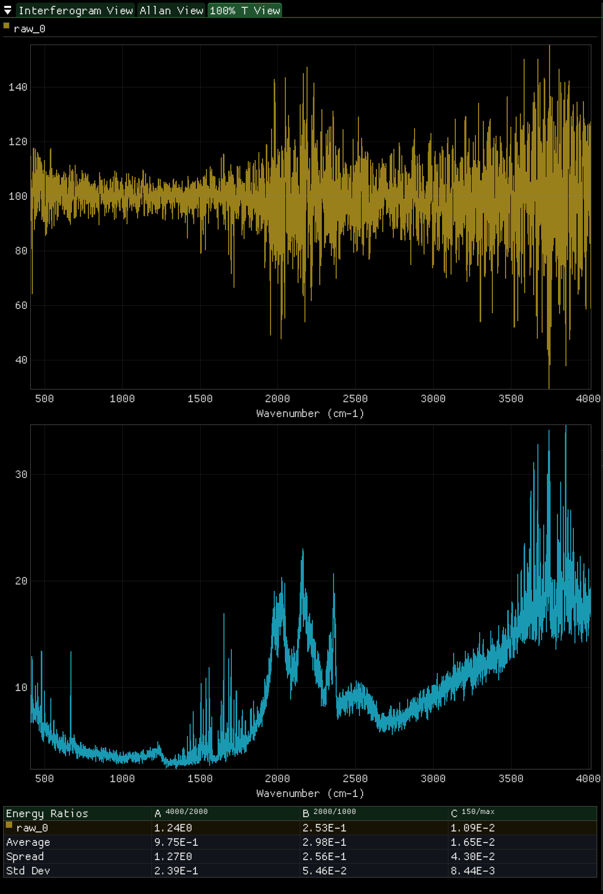
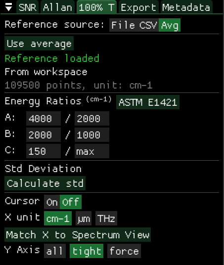
The 100% T panel divides each sample spectrum by a reference spectrum and plots the result as transmittance in percent, together with an optional standard-deviation curve and ASTM E1421-style energy ratios. The transmittance curves are drawn for the files highlighted in the Files panel (up to five). The standard deviation is computed over the files ticked with checkboxes (at least two).
15.1 Reference spectrum
Choose the reference spectrum source with File, CSV, or Avg:
File- pressSet as referenceto use the spectrum of the first highlighted file.CSV- type or browse to a two-column CSV file and pressLoad. The unit is taken from the file header when recognisable.Avg- pressUse averageto use the computed average spectrum. Disabled until an average exists.
Wavenumber (cm⁻¹), Wavelength (µm), or Frequency
(THz); anything else is read as cm⁻¹. The x values are converted to the unit selected in
the Spectrum panel. Empty and non-numeric rows are skipped.
15.2 Energy ratios
Three ratio rows A, B, C each take a numerator and a
denominator band in cm⁻¹. ASTM E1421 fills the standard bands
(4000/2000, 2000/1000, 150/max). max is recognized as valid and means the point
of the maximum spectral brightness. The table below the plots lists every highlighted
file and, once a standard deviation has been computed, adds Average,
Spread (max - min), and Std Dev rows.
15.3 Standard deviation
Calculate std computes the sample standard deviation across all ticked files
(at least two) and adds a second, X-linked plot with the Std Dev T(%) curve.
Energy ratio statistics are available only when Std Dev T(%) is calculated.
16. HITRAN Gas Markers
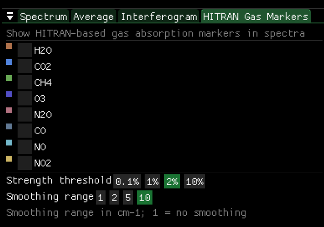
The HITRAN panel overlays known absorption bands of eight gases - H2O, CO2, CH4, O3, N2O, CO, NO, NO2 - on spectral plots, to help tell real absorption features from artefacts. Each gas has a colour swatch and a checkbox. Hovering a checkbox reports how many bands and peaks are drawn at the current settings. The markers appear on the Spectrum View and Average plots (and in spectral experiment viewers). They are display-only and never appear in exports. This is not meant to be a precision feature - it is there to help quickly distinguish noise from popular gas contaminants.
| Control | Values |
|---|---|
| Gas checkboxes | One per gas. |
Strength threshold | Allows to selectively mask weaker bands. 0.1%, 1%, 2% (default), 10% relative to the gas's smoothed peak envelope. The drawn peak ticks mark lines that are strong relative to the strongest transition. |
Smoothing range | Helps to emulate FTIRs of different resolution. 1, 2, 5, 10 cm⁻¹ (default 10; 1 disables smoothing). |
HITRAN Off | Unchecks all gases. |
17. Export panel
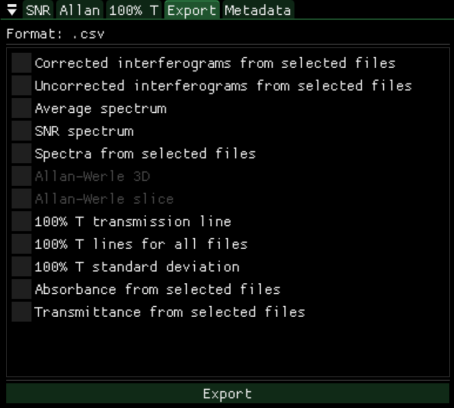
CSV export for a single workspace happens in the Export panel. Experiment tabs have their own Export panel (Sections 21 and 22). Tick the artifacts you want and press
Export. Pick a folder in the Select Export Directory dialog where the exported files will be saced. The files are written with 15 significant digits precision. Files are named after the dataset and the artifact, for example mydataset_average_spectrum.csv.
| Artifact | Output file | Columns |
|---|---|---|
| Corrected interferograms from selected files | <ds>_corrected_ifg_<file>.csv | OPD [µm], Primary Detector [V] |
| Uncorrected interferograms from selected files | <ds>_uncorrected_ifgs.csv | Index, Reference/Primary pairs for each file |
| Average spectrum | <ds>_average_spectrum.csv | X unit, Magnitude [V] |
| SNR spectrum | <ds>_snr_spectrum.csv | X unit, SNR |
| Spectra from selected files | <ds>_spectra.csv | X unit, one Magnitude column per file |
| Allan-Werle 3D | <ds>_allan_3d.csv | X unit, Tau [measurements], Allan Variance |
| Allan-Werle slice | <ds>_allan_slice_<wl>_<unit>.csv | Tau [measurements], Allan Variance |
| 100% T transmission line | <ds>_t100_transmission_<file>.csv | X unit, T(%) |
| 100% T lines for all files | <ds>_t100_all_transmissions.csv | X unit, one T% column per ticked file |
| 100% T standard deviation | <ds>_t100_stddev.csv | X unit, Standard Deviation T(%) |
| Absorbance from selected files | <ds>_absorbance_<file>.csv | X unit, Absorbance |
| Transmittance from selected files | <ds>_transmittance_<file>.csv | X unit, Transmittance |
The two 100% T curve exports differ: 100% T transmission line writes
the first highlighted file, while 100% T lines for all files writes one column
per ticked file. Absorbance and Transmittance CSV files are produced by the command-line export path (Section 27); the Export button writes only the ten artifacts above, even when one of those two checkboxes is ticked.
18. Multi-workspace sessions
A multi-workspace is a single .h5 file that contains several complete datasets
plus any experiments and batch recipes bundled with them. Because every used dataset is copied in full, the archive carries all measurement data with it. The original measurement files can be gone and the embedded datasets will still open. The .h5 layout of this multi-workspace archive is documented in the multi-workspace format specification. The user does not need to know whether an .h5 file is a single-dataset or a multi-workspace - the application will distinguish them automatically and open correctly.
Whenever an .h5 is opened, the primary interface is presented to the user. Each workspace, for either a dataset or an experiment, opens in its own tab. A Session tab is always open and located on the left side of the tab ribbon. It is used to manage the contents of the archive, add or remove datasets, experiments and to apply batch processing recipes. The Session tab will look differently for a single-dataset archive and for a multi-workspace archive.

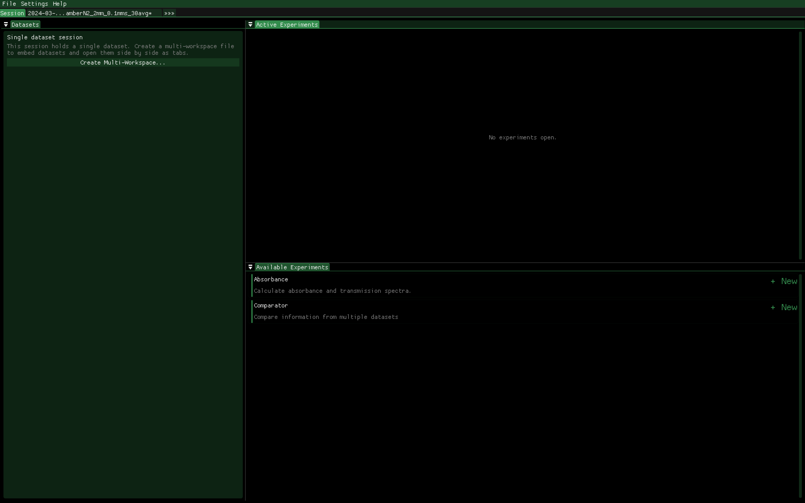

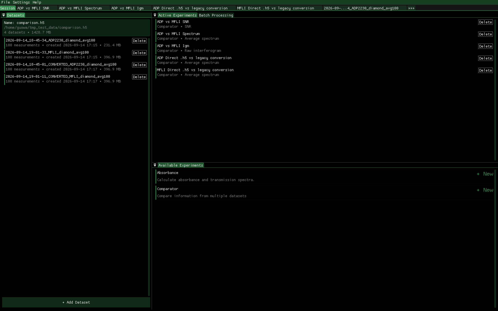
18.1 Creating the multi-workspace archive and adding datasets
- Create New empty multi-workspace -
New Multi-Workspace...button on the Welcome screen, orCreate Multi-Workspace...button shown in the Session tab when a single dataset is open. The second option embeds the open dataset in the new archive straight away. - Add new datasets - in the Datasets panel, press
+ Add Datasetand pick an.h5file. A full copy is embedded. the original file is not linked and is never modified.
18.2 Working with the Datasets panel
The header shows the file name, its path, and the number of datasets with the total size. Each dataset row reports the number of measurements, the creation date, and its size.
- Click a row to open the dataset in its own workspace tab.
- Right-click a row for
Rename,Export, andDeletedropdown menu.Exportbutton saves the dataset back out from the archive as a standalone.h5file that can be imported or moved elsewhere. - Delete removes the dataset from the archive and closes its tab.
Closing a dataset's workspace tab does not remove it from the archive - it stays in the Datasets list and can be reopened with one click.
19. Batch processing
Batch processing is available in multi-workspace sessions, in the
Batch Processing panel of the Session tab. It applies the same processing recipe to
any number of embedded datasets. Existing derived results are replaced with the new ones, as specified by the selected recipe.
19.1 Recipes
A recipe holds the spectrum processing settings (zero-padding, apodization window and its parameter, X-correction method and peak prominence), optional overrides for the reference laser wavelength and detector sensitivity, the list of artifacts to produce (spectra, average, SNR, 100% T, Allan), energy ratios, and the Allan decimation and wavelength range. Six standard recipes are built in:
| Recipe | Produces |
|---|---|
Average spectrum - NB weak / medium / strong | Spectra and average spectrum; Norton-Beer FWHM 1.2 / 1.4 / 1.6, K = 2, Hilbert correction. |
All - NB weak / medium / strong | Produces additional calculation artifacts: SNR, and 100% T, with the same window settings. |
The buttons below the recipe list:
New from dataset- captures the settings and artifacts of an existing dataset into a new recipe. You can give it a name and comment, and choose whether to pin the dataset's reference laser wavelength and detector sensitivity.Import/Export- read and write recipes as human-readable JSON files, for sharing or editing outside the application.Delete- removes a workspace recipe. Built-in recipes cannot be deleted.
19.2 Applying a recipe
- Select a recipe and tick the datasets to process (
All/Nonebuttons, or click the checkboxes; Space toggles the focused row). - Press
Batch processand confirm withRun. The confirmation notes that all existing derived results will be stripped before calculation. - A progress dialog reports the current dataset and record undergoing calculation.
Datasets that are open in tabs are updated in place as soon as the batch processing finishes.
20. Working with experiments
Experiments compare data across datasets and are stored inside a multi-workspace archive.
There are two types, created from the Available Experiments panel in the
Session tab:
- Comparator - overlays one artifact type from several datasets for direct comparison.
- Absorbance - computes absorbance or transmittance of one or more samples.
New experiments are named automatically (Absorbance 1, Absorbance 2, Comparator 1, ...) and can be renamed either in the Name field of
their Settings panel or by right-clicking the row in Active Experiments.
Deleting an experiment (right-click or the row's Delete button) removes it
from the archive after confirmation. Closing an experiment tab only hides it; the
experiment stays in the Active Experiments list.
Plot interaction in experiment tabs is the same as in workspace panels: wheel zoom, Shift+drag range selection, arrow-key panning, ESC to reset x-axis range and Ctrl+Q for toggling the tracking cursor.
21. Comparator
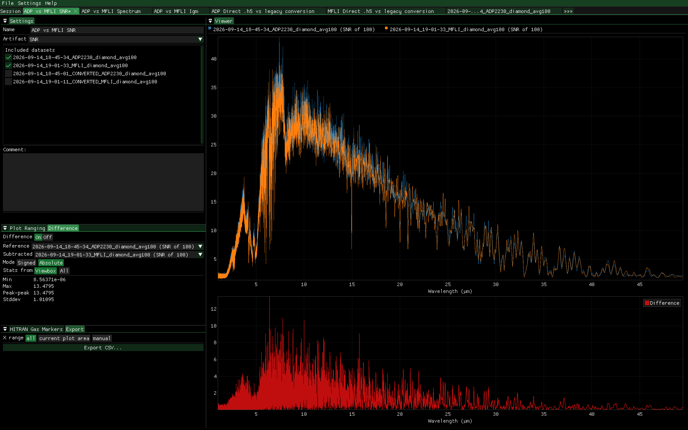
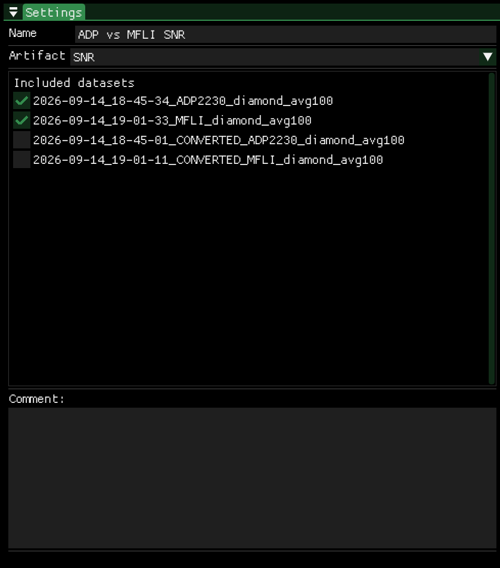
In Settings, choose the artifact to compare:
Average or raw spectrumSNR100% TRaw or corrected interferogram
Then tick the datasets to include in Included datasets. Until you change a checkbox, all datasets embedded in the container are included. After the first change, the checkboxes define the selection. Rows are
greyed out when the artifact is not computer or does not exist for that dataset and yellow when it is stale - hovering a yellow row explains that the artifact should be recomputed in its workspace tab. For artifacts that have several members (raw spectra, 100% T, interferograms), a dropdown on each row picks which member to use.
21.1 Difference curve
The Difference panel subtracts one curve from another. Turn it
On, pick the Reference and the Subtracted curves, and
choose Signed or Absolute mode. The statistics section reports
Min, Max, Peak-peak, and Stddev, either
over the visible X range (Stats from: Viewbox) or the full curves
(All). The difference is drawn as a linked subplot below the main plot. Both
plots share the X axis and zoom together.
21.2 Normalize to 1
Spectra from different expeirment may come with different absolute Y scales. A normalization feature is available to make it easier to compare them. The Normalize to 1 toggle in the Plot Ranging panel divides each curve by its own maximum so every curve peaks at 1.0 and the shapes can be compared directly. It is available for the Average or raw spectrum and SNR artifacts (not 100% T or interferograms), applies to the plot, the tracking cursor, the Difference curve, and the CSV export (columns marked [norm.]).
21.3 Export
The experiment Export panel writes all displayed curves to a singe multi-column CSV file.
Choose the X range - all, current plot area, or
manual with min/max fields - then press Export CSV... and choose
a destination. The file contains one x/y column pair per curve, using the current unit. When
the difference curve is enabled it is appended as an extra column pair.
22. Absorbance
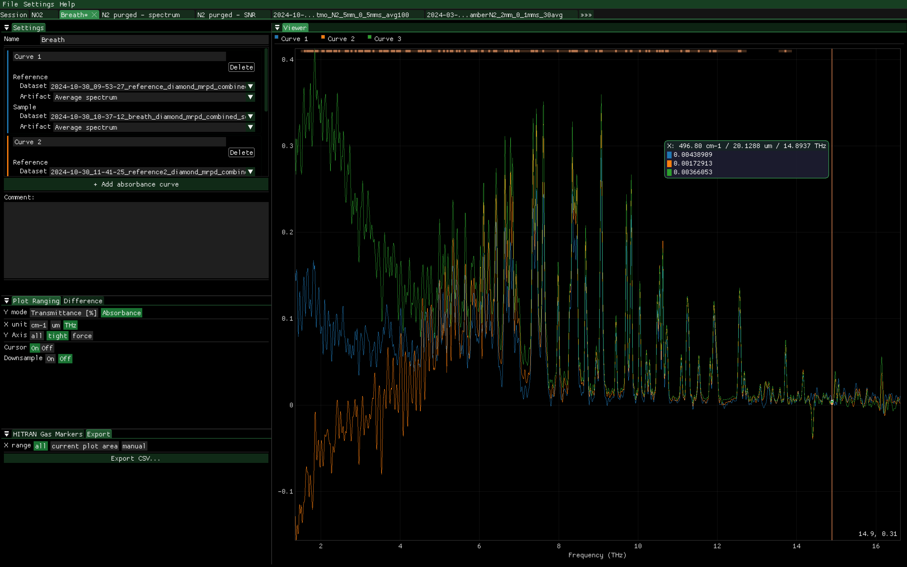
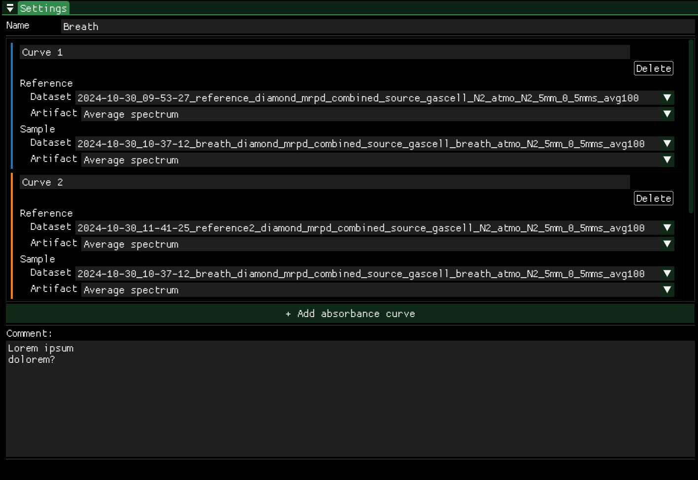
An Absorbance experiment holds a list of curves. Each curve has a name and a
Reference and Sample block, each with:
Dataset- which dataset to take the spectrum from.Artifact-Average spectrumorRaw spectrum.Member- which raw measurement (only for raw spectra).
Use + Add absorbance curve to add more pairs; Delete removes a
curve. The comment box at the bottom is stored with the experiment. Curves are computed
automatically whenever a selection changes. If a curve cannot be computed, its yellow
status text reports the reason (for example No overlapping X region or
Reference empty).
The Plot Ranging panel chooses Y mode -
Transmittance [%] or Absorbance - plus the X unit, Y axis mode,
cursor, and display downsampling. Absorbance is calculated as −log10(T), so a
flat 100% transmittance line corresponds to zero absorbance.
22.1 Difference curve
The Difference panel subtracts one curve from another. Turn it
On, pick the Reference and the Subtracted curves, and
choose Signed or Absolute mode. The statistics section reports
Min, Max, Peak-peak, and Stddev, either
over the visible X range (Stats from: Viewbox) or the full curves
(All). The difference is drawn as a linked subplot below the main plot. Both
plots share the X axis and zoom together. For Absorbance experiments this acts as a
residual/error curve between two transmittance or absorbance curves.
22.2 Export
The experiment Export panel writes all displayed curves to a singe multi-column CSV file.
Choose the X range - all, current plot area, or
manual with min/max fields - then press Export CSV... and choose
a destination. The file contains one x/y column pair per curve, using the current unit and,
for Absorbance, the selected Y mode. When the difference curve is enabled it is appended
as an extra column pair. The tracking cursor and display downsampling never affect exported
data - exports always use full resolution.
23. Keyboard and mouse reference
| Input | Action |
|---|---|
| ↑ / ↓ | Move through the file list and load the highlighted file. |
| Shift+↑ / ↓ | Add the highlighted file to the multi-file selection. With five files selected, the oldest one is dropped. |
| Space | Toggle the batch-selection checkbox for every highlighted file. |
| Delete | Delete the highlighted file from the workspace (with confirmation). |
| ← / → | Pan the focused plot's X axis by 10% of the visible range. |
| ESC | Reset the zoom / autoscale the focused plot. |
| Mouse wheel | Zoom; in most plots only X is affected (Y is auto-fitted), while the Allan 2D slice zooms both axes. |
| Shift+drag | Select an X range to zoom to. |
| Ctrl+Q | Toggle the tracking cursor. |
| Ctrl+Y | Toggle Auto-fit Y in the Interferogram View. |
| Ctrl+A | Toggle Max at zero in the Interferogram View. |
| Ctrl+D | Toggle Downsample in the Interferogram View. |
| Ctrl+S | Save all changes. |
| Ctrl+Shift+S | Save As for the active workspace. |
| Ctrl+H | Return to the Welcome screen (closes tabs and prompts to save). |
The Ctrl+Y, Ctrl+A, and
Ctrl+D shortcuts act on the Interferogram View only. Keyboard
shortcuts apply to the focused panel. With Focus panels on hover setting enabled
(default), moving the mouse over a panel is enough to focus it.
24. Single-dataset workspace format
This page is the reference specification for the single-dataset workspace format. Read it if you plan to write a converter (Section 26) or to read workspace files with your own tools.
24.1 Overview
One HDF5 file holds the entire workspace: raw measurements, computed artifacts, and per-panel data-view settings.
24.1.1 Format rules
| # | Rule |
|---|---|
| 1 | Every member - interferogram dataset or member group - carries a kind attribute: "original" (as loaded) or "derivative" (computed). kind = "original" is written once, never overwritten. |
| 2 | Every group carries @origin and @config attributes (JSON strings). Numeric data lives in datasets; attributes are metadata only. |
| 3 | No file versioning. A static root @format attribute identifies the layout. |
| 4 | No host info: no hostnames, usernames, paths, or OS fingerprints. @origin records only application identity and timestamp. |
| 5 | No images, opaque blobs, base64, executables, or scripts. The container stores only datasets, groups, and string metadata attributes. |
| 6 | All numeric data is native HDF5 typed datasets (IEEE fp32/fp64, i32). Datatype is the format specifier; @config records units. Strings: VLEN UTF-8 (H5T_C_S1 + H5T_VARIABLE), shape (1,). Shapes: C order, row-major. All 2-column datasets carry columns and units string attributes. |
| 7 | Derivative members can be safely stripped: delete any group or dataset with kind = "derivative". Original members - interferograms with kind = "original" and original spectra - are untouched. Apps must tolerate stripped files and recompute on demand. |
| 8 | Root datasets: workspace.json (§24.8), measurement_config.json (§24.6.1), measurement_comment.txt (§24.6.2), tags (§24.6.3). All may be empty. |
| 9 | Configuration is extensible: unknown keys are preserved verbatim on save. |
| 10 | Derivative datasets reference their source data via inputs (absolute HDF5 paths in @config). Every referenced path must exist in the file - a saved file must never contain an inputs entry pointing to a deleted member. |
24.2 Container layout
Groups are organized by data type. All x/y-style data is stored as 2-column datasets with columns and units attributes. Original measurements may carry a timestamp attribute.
24.2.1 Notation
| Symbol | Meaning |
|---|---|
name/ | HDF5 group |
name | HDF5 dataset |
@name = value | HDF5 attribute |
(fp64 [N]) | Dataset shape: fp64 = IEEE double, fp32 = float, i32 = int32 |
<id> | Member identifier (§24.3) |
Shapes are C order, row-major. Scalars: shape [1]. VLEN strings: datasets of shape (1,) with H5T_C_S1 + H5T_VARIABLE.
24.2.2 Root attributes & datasets
@format- static"unified-spectral-data-container". Never changes.@created- ISO-8601 UTC timestamp, written at creation. Only reset onSave As.- Root datasets are described in §24.6 and §24.8.
24.2.3 Interferograms
All interferograms are flat 2D datasets directly inside the type group. No per-scan sub-groups; @origin/@config are pool-level attributes on the group. Each original dataset may carry a timestamp attribute (ISO-8601 UTC).
24.2.3.1 Uncorrected IFG - igm_uncorrected_x/
No OPD axis - x-axis is sample indices. axisCorrected is false. Imported from WUST Mini FTS CSV raw measurements.
24.2.3.2 Corrected IFG - igm_corrected_x/
axisCorrected is true. Corrected single IFGs are imported from ArcOptix IGMs TXT measurements (kind = "original"). Derivative corrected IFGs may be produced by computation pipelines (e.g. phase correction).
24.2.4 Spectrum member groups
Precomputed spectra (kind = "original") come from measurement sources. FFT-computed spectra (kind = "derivative") come from the app pipeline (§24.7.3). Both use the same layout:
Column 0: x-axis (wavenumber, wavelength, or THz per @config xUnit). Column 1: spectrum magnitude. Units from @config xUnit and yUnits.
24.2.5 Derivative member groups
24.2.5.1 Average spectrum (average_spectra/)
Mean spectrum computed from N input interferograms. Same layout as §24.2.4: data (fp64 [M,2]) with columns ["x", "y"].
24.2.5.2 SNR spectrum (snr_spectra/)
Signal-to-noise ratio per wavelength bin, computed from ≥ 2 input interferograms. SNR = mean / standard deviation, calculated online across input files.
24.2.5.3 Allan-Werle plot (allan_werle/)
Allan-Werle variance as a function of averaging window (taus, in measurements) and wavelength - it characterises instrument stability.
surface_data is a T × W array (cluster sizes × wavelength bins). The columns attribute labels its three axes as ["taus", "wavelengths", "allan_var"]; wavelengths holds the wavelength axis in µm and taus holds the cluster sizes in measurements.
24.2.5.4 100% T curves (t100/)
Transmittance analysis: T% = (sample spectrum / reference spectrum) × 100 for each input file.
reference: reference spectrum (file or average). stddev: standard deviation of T% across all checked files at each x. transmittance/<file_id>/: one subgroup per input file.
24.3 Member IDs & references
<id>is a human-readable slug (sanitized source basename, e.g.sample_0001), unique within its type group, stable across saves.- On collision, append a numeric suffix (
sample_0001_2). - Derivative IDs are fixed per artifact type:
spec_<ifgId>for computed spectra,average,snr,allan, andt100. inputsin@configreference members by absolute HDF5 path:["/igm_uncorrected_x/record_0"].
24.4 The kind attribute
String attribute on each member - interferogram dataset or member group. Type groups carry @schema describing member layout.
kind | Meaning |
|---|---|
"original" | Data as loaded from a measurement source |
"derivative" | Produced by a computation pipeline |
| Type group | @schema |
|---|---|
igm_uncorrected_x/, igm_corrected_x/ | "interferogram" |
spectra/ | "spectrum/v1" |
average_spectra/ | "average_spectrum/v1" |
snr_spectra/ | "snr_spectrum/v1" |
allan_werle/ | "allan_werle/v1" |
t100/ | "t100/v1" |
24.5 @origin attribute
JSON string attribute on every group. Written at creation, never silently rewritten. Application identity only - no host info.
| Key | Type | Description |
|---|---|---|
timestamp | string | ISO-8601 UTC, second precision |
application | string | Producing application name |
version | string | Application version |
Additional keys permitted (e.g. instrument, notes) but no host-identifying info. For interferogram groups, one @origin serves all datasets in the group.
Individual original datasets may carry a timestamp attribute (ISO-8601 UTC) recording the acquisition time of that measurement.
24.6 Measurement setup metadata (root)
24.6.1 measurement_config.json
Root VLEN-string dataset holding a JSON object with the measurement setup. Extensible (unknown keys preserved).
| Key | Type | Description |
|---|---|---|
instrument.model | string | e.g. "ArcOptix FT" |
instrument.serial | string | |
detector.type | string | e.g. "InGaAs", "MCT" |
detector.model | string | Detector model |
detector.responsivity | fp64 | Detector responsivity |
detector.internalGain | fp64 | Internal gain setting |
detector.externalGain | fp64 | External amplifier gain |
detector.misc | string | Free-form additional detector info |
acquisitionCard.model | string | DAQ card model |
acquisitionCard.resolution | i32 | ADC resolution [bits] |
acquisitionCard.gain | fp64 | DAQ card gain |
acquisitionCard.misc | string | Free-form additional DAQ info |
laser.wavelengthUm | fp64 | Reference laser wavelength [um] |
acquisition.integrationTimeS | fp64 | Integration time per scan [s] |
acquisition.scans | i32 | Co-added scans |
acquisition.resolutionCmInv | fp64 | Target resolution [cm⁻¹] |
acquisition.delayLine | object | Delay-line scan params |
environment.ambient.temperatureC | fp64 | Ambient temperature [°C] |
environment.ambient.humidityPct | fp64 | Ambient relative humidity [%] |
environment.instrument.temperatureC | fp64 | Instrument temperature [°C] |
environment.instrument.humidityPct | fp64 | Instrument relative humidity [%] |
environment.instrument.purgingGas | string | e.g. "N2", "dry air", "" for none |
acquisition.delayLine: minimumSpeed, maximumSpeed, configuredScanSpeed (fp64, mm/s); configuredScanStart, configuredScanLength, minimalScanLength (i32, ticks); comPort (string); speedSliderTicks (i32).
Non-standard keys → measurement_config.json["legacy"] as flat {key: value}. Preserved on save.
24.6.2 measurement_comment.txt
Free-form UTF-8 comment (vlen str). May be empty. Round-tripped verbatim.
24.6.3 tags
Comma-separated tags (vlen str), e.g. "FTIR, sample-x". May be empty. Split on , and trim.
24.7 @config attribute
JSON string attribute on every group. Holds everything needed to reproduce the member from its inputs. Extensible. Display/view state belongs in workspace.json.
24.7.1 Shared primitives
xUnit: "cm-1" | "um" | "thz".
apodization object:
| Key | Type | Default | Description |
|---|---|---|---|
window | string | "rectangular" | rectangular, gauss, triangular, norton_beer, dolph_chebyshev, hamming, blackman_harris, hann, happ_genzel, kaiser |
gaussSigma | fp64 | 1.0 | Gaussian sigma |
rectWidth | fp64 | 1.0 | |
rectAsymMode | bool | true | true = asymmetric |
nortonBeerFwhm | fp64 | 1.5 | 1.0–2.0 |
dolphChebyshevAtDb | fp64 | 60.0 | Attenuation [dB] (50–160) |
hammingAlpha | fp64 | 0.54 | 0.36–1.0 |
kaiserBeta | fp64 | 6.0 | 0.5–12.0 |
24.7.2 Interferogram config
| Key | Type | Default | Description |
|---|---|---|---|
sourceFormat | string | - | csv, txt |
dataType | string | - | igm_uncorrected_x | igm_corrected_x |
axisCorrected | bool | false | OPD column present |
detectorUnits | string | "V" | |
opdUnits | string | "um" | |
channelOrder | string[] | - | e.g. ["Reference detector", "Primary detector"] |
fileCount | i32 | - | Scans in group |
pointsPerFile | i32 | - | Points per scan |
24.7.3 Spectrum config
| Key | Type | Default | Description |
|---|---|---|---|
inputs | string[] | - | IFG paths (required for derivative, omitted for original) |
xUnit | string | "cm-1" | |
yUnits | string | "V" | Must be linear: a.u., V, W, etc. No dB. |
sourceFormat | string | - | csv, txt |
detectorUnits | string | "V" | |
refLaserUm | fp64 | 1.550 | Reference laser [um] |
zeroPadK | i32 | 0 | N = n·(K+1); 0 = off |
xCorrectionMethod | string | "hilbert" | hilbert | peaks |
prominenceThreshold | fp64 | 0.02 | Peak-finding fraction (0.0–0.5) |
detectorSensitivityKVPerW | fp64 | 0.0 | 0 = no conversion |
apodization | object | §24.7.1 |
24.7.4 Average spectrum
Same as §24.7.3, plus count (i32, number of files averaged).
24.7.5 SNR spectrum
Same as §24.7.4, plus fileCount (i32, ≥ 2). The data stores the SNR per bin, computed online as mean/stddev across the input files. Column 0: x-axis; column 1: SNR (dimensionless).
24.7.6 Allan-Werle plot
| Key | Type | Default | Description |
|---|---|---|---|
inputs | string[] | - | |
xUnit | string | "um" | |
calcBase | string | "t100" | t100 | spectrum |
xRangeMin, xRangeMax | fp64 | 1.0, 30.0 | Wavelength slice range |
wavelengthDecimation | i32 | 5 | |
sliceIndex | i32 | 0 | |
refLaserUm | fp64 | 1.550 | |
apodization | object | §24.7.1 |
24.7.7 100% T
| Key | Type | Default | Description |
|---|---|---|---|
inputs | string[] | - | |
xUnit | string | "cm-1" | |
reference.source | string | - | file | csv | average |
reference.path | string | - | Absolute HDF5 path |
energyRatios | array | [] | Up to 3 {"num":"800","den":"1000"} pairs |
Afileoraveragereference points at an HDF5 member. Acsvreference stores an empty path - the CSV file is chosen in the 100% T panel and is not archived with the workspace.
24.8 workspace.json - data-view state
Root-level JSON dataset. Holds selections, axis ranges, zoom, units, y-scales, and processing parameters. App state is isolated under applications.<app-name>.
Does not store UI chrome: no window geometry, docking layout, theme, fonts, thread pool.
Apps must tolerate emptyworkspace.json({}or empty string).
24.8.1 Layout
{
"app": { "name": "FTS Data Explorer", "version": "26.08.3" },
"applications": {
"FTS Data Explorer": {
"plotDefaults": { "maxAtZero": false, "xAxisBase": 0, "xCorrectionMethod": 0, "peakProminence": 0.02 },
"selection": {
"sortedFiles": ["sample_0001.csv"],
"selectedFiles": ["sample_0001.csv"],
"filesSelectedForAveraging": [true],
"currentSortedFileIndex": 0
},
"interferogramView": {
"zoomRange": { "min": 0, "max": 100 },
"refY": { "min": -0.1, "max": 0.2 },
"primY": { "min": -0.1, "max": 0.2 }
},
"spectrumView": {
"xUnit": 0, "yScale": 0, "yAxisMode": 0,
"detectorSensitivityKVPerW": 0.0, "refLaserUm": 1.550, "zeroPadK": 0,
"apodization": { "window": "rectangular", "gaussSigma": 1.0 }
},
"averageView": { "xUnit": 0, "yScale": 0, "yAxisMode": 0 },
"snrView": { "xUnit": 0, "yScale": 0, "yAxisMode": 0 },
"allanView": { "xUnit": 1, "wavelengthDecimation": 5, "calcBase": 0 },
"t100View": { "xUnit": 0, "yAxisMode": 0, "referenceSource": 0,
"energyRatios": [{"num":"","den":""}] }
}
}
}applications keys match the app.name string from @origin.
24.8.2 Key reference
| Key | Type | Values |
|---|---|---|
app.name | string | Application name |
app.version | string | Application version |
applications | object | Map of app-name → state |
plotDefaults.maxAtZero | bool | |
plotDefaults.xAxisBase | i32 | 0 = index, 1 = OPD |
plotDefaults.xCorrectionMethod | i32 | 0 = Hilbert, 1 = Peaks |
selection.sortedFiles | string[] | Display order |
selection.selectedFiles | string[] | |
selection.filesSelectedForAveraging | bool[] | Checkbox state |
selection.currentSortedFileIndex | i32 | |
interferogramView.zoomRange | {min,max} | |
interferogramView.refY, primY | {min,max} | Per-channel Y limits |
spectrumView.xUnit | i32 | 0 = cm⁻¹, 1 = um, 2 = THz |
spectrumView.yScale | i32 | 0 = linear, 1 = log10, 2 = dB |
spectrumView.yAxisMode | i32 | 0 = all, 1 = tight, 2 = force |
spectrumView.forcedYMin, forcedYMax | fp64 | |
spectrumView.detectorSensitivityKVPerW | fp64 | 0 = off |
spectrumView.refLaserUm | fp64 | |
spectrumView.zeroPadK | i32 | |
spectrumView.apodization | object | §24.7.1 |
averageView.*, snrView.* | - | Same xUnit/yScale/yAxisMode/limits keys |
allanView.calcBase | i32 | 0 = 100% T, 1 = spectrum |
allanView.wavelengthDecimation, sliceIndex, xRangeMin, xRangeMax | - | Allan-Werle controls |
t100View.referenceSource | i32 | 0 = file, 1 = CSV, 2 = average |
t100View.energyRatios | array | Up to 3 {num,den} pairs |
24.8.3 Not persisted
Window geometry, UI theme, docking layout, thread config, filesystem paths, host identity, transient state, derivable booleans - live in ~/.fts_data_explorer_config.
24.9 Reading a workspace with h5py
The container is plain HDF5, so any HDF5 tool can read it. This snippet lists the groups and reads one interferogram together with the attributes that describe it:
import h5py
with h5py.File("sample.h5", "r") as f:
print(dict(f.attrs)) # @format, @created
print(list(f.keys())) # root datasets and data groups
group = f["igm_uncorrected_x"]
print(group.attrs["config"]) # JSON: how the data was acquired
ds = group["record_0"]
print(ds.shape, ds.dtype) # (N, 2), float32
print(ds.attrs["columns"], ds.attrs["units"])
data = ds[...] # N x 2 numpy array
reference, primary = data[:, 0], data[:, 1]
25. Multi-workspace container format
A multi-workspace container holds many single-dataset workspaces plus the experiments and batch recipes built on top of them. It extends the format described in Section 24; this page specifies what the container adds.
25.1 Overview
A multi-workspace container (a .h5 file, distinguished from a single-dataset .h5 by its root archive.json - see §25.9) holds many single-dataset workspaces plus the cross-workspace artifacts built on top of them. It is the project file the application opens when a user works with several datasets at once.
Each embedded workspace is a complete unified-spectral-data-container - raw measurements, computed spectra, and per-panel view state - stored byte-identically under a sources/<id>/ group. The container adds three things the single-dataset format does not have:
- An archive manifest (
archive.json) that is the single source of truth for what the archive contains. - Cross-workspace experiments (
experiments/<id>/) - Absorbance and Comparator analyses that overlay artifacts from one or more embedded datasets. - Batch-processing recipes (
recipes/) - reusable processing parameter sets that can be applied across datasets.
The inner layout of each embedded workspace is specified by the Single-Dataset Specification; this document does not repeat it.
25.2 Format rules
| # | Rule |
|---|---|
| 1 | The container has no root @format attribute. This distinguishes it from a single-dataset .h5, which always carries @format = "unified-spectral-data-container". The archive.json dataset at the root is the discriminator (see §25.9). |
| 2 | archive.json is the source of truth. The list of sources, experiments, and the tab-strip order live in the manifest. Group existence on disk is secondary; the manifest is what the application reads first. |
| 3 | All mutations are atomic: copy the file to a temp sibling, mutate the temp, reopen it once (HDF5 1.14.3 metadata-cache quirk), then rename over the original. A crash never leaves a half-written archive - at most a stale .tmp file beside it (see §25.8). |
| 4 | Manifest version is gated. An unknown version in archive.json produces an explicit error; the application never guesses the layout. |
| 5 | No host info: no hostnames, usernames, paths, or OS fingerprints. The archive records only application identity and timestamps. |
| 6 | The pre-embedding file path of a source is never stored. Once a dataset is embedded, it has no link back to where it came from. |
| 7 | Embedded workspace content is byte-identical to a standalone .h5 file. The same read/write helpers operate on the group handle as on a file root, so embedded sources behave exactly like standalone files. |
| 8 | No images, opaque blobs, base64, executables, or scripts. The container stores only datasets, groups, and string metadata attributes - the same restriction as the single-dataset format. |
| 9 | All numeric data is native HDF5 typed datasets (IEEE fp32/fp64, i32). Strings are VLEN UTF-8 (H5T_C_S1 + H5T_VARIABLE), shape (1,). Shapes are C order, row-major. The fp32/fp64 mix is inherited from the single-dataset format (uncorrected interferograms are fp32 on disk); multi-workspace-specific datasets (experiment results/) are fp64. |
| 10 | Every mutation self-compacts the file. Because HDF5 does not reclaim bytes freed by H5Ldelete by default, the atomic copy step drops dead space and the archive stays near its live size instead of growing monotonically. |
25.3 Container layout
The root holds one dataset (the manifest) and three optional group families. Groups are organized by function: embedded datasets, cross-workspace experiments, and batch recipes.
25.3.1 Notation
| Symbol | Meaning |
|---|---|
name/ | HDF5 group |
name | HDF5 dataset |
@name = value | HDF5 attribute |
(fp64 [N]) | Dataset shape: fp64 = IEEE double, i32 = int32 |
<id> | Source or experiment identifier (§25.4) |
Shapes are C order, row-major. VLEN strings are datasets of shape (1,) with H5T_C_S1 + H5T_VARIABLE.
25.4 archive.json manifest
Root-level VLEN-string dataset. JSON object. The single source of truth for the archive's contents. Written at creation, rewritten on every mutation that changes membership.
25.4.1 Schema
{
"version": 2,
"sources": [
{ "id": "sample_0001", "name": "sample_0001",
"memberCount": 12, "createdIso": "2026-08-01T12:34:56Z" }
],
"experiments": [
{ "id": "exp_0001", "name": "Absorbance 1",
"type": "Absorbance", "createdIso": "2026-08-02T09:00:00Z" }
],
"tabOrder": [ "ws:sample_0001", "exp:exp_0001", "ws:sample_0002" ]
}25.4.2 Key reference
| Key | Type | Description |
|---|---|---|
version | i32 | Manifest schema version. Current: 2. Unknown → explicit error. |
sources | array | One entry per embedded workspace. Order is preserved as written (append on embed, erase on remove). |
sources[].id | string | Stable source identifier (slug). Unique within the archive. Used as the sources/<id>/ group name. |
sources[].name | string | Display name. May differ from id after a rename. The manifest name is authoritative; @summary mirrors it best-effort. |
sources[].memberCount | i32 | Number of primary members, by the read priority corrected IFG > uncorrected IFG > original spectra. Refreshed on save-back. |
sources[].createdIso | string | ISO-8601 UTC timestamp of first embed. |
experiments | array | Optional. One entry per persisted cross-workspace experiment. |
experiments[].id | string | Stable experiment identifier. Used as the experiments/<id>/ group name. |
experiments[].name | string | Display name (instance name, e.g. "Absorbance 1"). |
experiments[].type | string | "Absorbance" or "Comparator". |
experiments[].createdIso | string | ISO-8601 UTC timestamp. |
tabOrder | string[] | Optional. Exact visual tab-strip order, interleaved: "ws:<sourceId>" for workspace tabs, "exp:<experimentId>" for experiment tabs. |
25.4.3 Legacy tab-order fallbacks
Older archives may lack tabOrder. The reader then restores the workspace tabs and their order; persisted experiments still appear as tabs, in file order, and only their saved interleaved tab order is lost:
openTabs- array of source ids (legacy). Each id opens as a workspace tab.- Per-source
openboolean - sources withopen = trueopen as workspace tabs, in manifest order.
If neither tabOrder nor openTabs is present and no source has open = true, no workspace tabs auto-open.
25.5 sources/<id>/ - embedded workspaces
One group per embedded dataset. The group name is the source id. The group's content is a complete single-dataset workspace, stored exactly as it would be in a standalone .h5 file.
25.5.1 @summary attribute
JSON string attribute on each source group. Informational mirror of the manifest entry; the manifest is authoritative. Name and member count are refreshed on save-back and rename; createdIso is rewritten with the current time on save-back.
| Key | Type | Description |
|---|---|---|
id | string | Source id (matches group name and manifest sources[].id) |
name | string | Display name (mirrors manifest) |
memberCount | i32 | Primary member count (mirrors manifest) |
createdIso | string | ISO-8601 UTC timestamp of the last save-back (the manifest keeps the first-embed time) |
25.5.2 Inner layout
The group's children - root datasets, type groups, member datasets, and all @format/@created/@origin/@config/@schema attributes - are specified in full by the Single-Dataset Specification. An embedded source is read and written with the same helpers as a standalone file; the only difference is that the HDF5 root handle is the sources/<id> group rather than the file root.
Original-data immutability and inputs integrity (single-dataset rules 7, 10) apply inside each embedded source. Save-back rewrites the whole source group atomically.
25.6 experiments/<id>/ - cross-workspace analysis
One group per persisted experiment. Experiments overlay artifacts from one or more embedded datasets: Absorbance computes reference/sample ratios, Comparator overlays selected artifact types across datasets. Transient (unsaved) experiments have no group here; only persisted instances occupy space.
25.6.1 config.json
JSON string dataset. Full instance state minus transient plot flags. The type field selects the schema branch: Absorbance stores curves; Comparator stores artifactSelector/comparatorKeys/memberPicks.
Shared keys (both types)
| Key | Type | Default | Description |
|---|---|---|---|
type | string | - | "Absorbance" or "Comparator" |
name | string | - | Instance display name (e.g. "Absorbance 1") |
comment | string | "" | Free-text note |
xUnit | i32 | 0 | 0 = cm⁻¹, 1 = µm, 2 = THz |
yMode | i32 | 0 | Meaningful only for Absorbance (written for both types): 0 = T%, 1 = A |
yAxisMode | i32 | 0 | 0 = all, 1 = tight, 2 = force |
forcedYMin, forcedYMax | fp64 | 0.0, 1.0 | Forced Y range (mode 2) |
yScale | i32 | 0 | 0 = linear, 1 = log10, 2 = dB (gated off for T100/IFG) |
showCursor | bool | false | Tracking cursor |
hitranGases | bool[8] | all false | HITRAN gas-marker selection (spectral artifacts) |
hitranThreshold | i32 | 2 | Threshold level index (0–3) |
hitranSmooth | i32 | 3 | Smoothing level index (0–3) |
downsampleDisplay | bool | false | Display-only stride downsampling |
computed | bool | false | True once a compute produced a ratio for ≥1 curve |
manualXMin, manualXMax | fp64 | 0.0, 0.0 | Saved view X range (in the saved xUnit) |
tabHidden | bool | false | Tab-strip visibility (closed-but-kept experiments) |
differenceEnabled | bool | false | Difference panel on/off |
differenceRefIdx | i32 | 0 | Index of the Reference curve in the visible-curve list |
differenceSubIdx | i32 | 1 | Index of the Subtracted curve in the visible-curve list |
differenceMode | i32 | 0 | 0 = Signed, 1 = Absolute |
differenceStatsRegion | i32 | 0 | 0 = Viewbox, 1 = All |
Absorbance-specific keys
| Key | Type | Description |
|---|---|---|
curves | array | One entry per reference/sample pair |
curves[].refKey | string | Stable key of the reference source |
curves[].refArtifact | i32 | 0 = Average spectrum, 1 = Raw spectrum |
curves[].refMember | string | Member id ("" = first member) |
curves[].sampleKey | string | Stable key of the sample source |
curves[].sampleArtifact | i32 | 0 = Average spectrum, 1 = Raw spectrum |
curves[].sampleMember | string | Member id |
curves[].name | string | User-chosen curve name ("" = auto "Curve N") |
Comparator-specific keys
| Key | Type | Description | |
|---|---|---|---|
artifactSelector | i32 | 0 = Average spectrum, 1 = Raw spectrum, 2 = SNR, 3 = T100, 4 = Corrected IFG, 5 = Raw IFG | |
comparatorKeys | string[] | Stable keys of included datasets. Empty + comparatorKeysExplicit=false = all embedded datasets. | |
comparatorKeysExplicit | bool | True once the user toggled a checkbox (empty then means "nothing selected") | |
memberPicks | object | Map of dataset key → member id (multi-member artifacts) | |
maxAtZeroIfg | bool | false | Align each curve's center burst at x = 0 (Comparator, interferogram artifacts) |
25.6.2 fingerprint.json
JSON string dataset. Per-source compute-time snapshots used to detect result staleness. Keyed by a composite string <sourceKey>\x1f<artifact>\x1f<memberId> (two curves may reference the same source with different members). On load, the application compares each snapshot to the source's current member state and raises a staleness flag on mismatch.
MemberSnapshot schema
| Key | Type | Description |
|---|---|---|
memberId | string | Resolved member id at compute time |
dataHash | uint64 | FNV-1a content hash over the member's x/y IEEE-754 bit patterns (stable across app versions) |
effectiveParams | object | Normalized params that determine content: active apodization window's field(s), zeroPadK, refLaserUm, xCorrectionMethod, prominence (peak-finding only). xUnit and sensitivity excluded (display-only). |
valid | bool | False for unresolvable members and legacy entries (dropped silently on load) |
Staleness is data-grounded: a snapshot mismatch means the source's data or effective params changed since compute. The user sees a warning and a Recompute button; results are not auto-discarded.
25.6.3 results/
Group of fp64 datasets. Absorbance experiments store one curve_<k>_x/curve_<k>_ratio pair per computed curve; both experiment types additionally store difference_x/difference_y when the Difference panel is enabled. Comparators otherwise store no results - their overlay curves are re-extracted live from the sources.
| Dataset | Shape | Description |
|---|---|---|
curve_<k>_x | fp64 [M] | Common X grid (overlapping region of the curve's ref/sample pair) |
curve_<k>_ratio | fp64 [M] | Clamped ratio (sample / reference) |
k is the curve index (0-based). Only curves with non-empty gridX/ratioY are written. The display curve (T% or absorbance) is derived from the ratio at render time and is not stored separately - yMode in config.json selects the transform.
25.6.4 stats.json
JSON string dataset. Light per-curve summary statistics over the display curve. Absorbance only; Comparator emits an empty array.
[
{ "label": "Curve 1", "min": 0.42, "max": 1.08, "mean": 0.91, "std": 0.03 }
]| Key | Type | Description |
|---|---|---|
label | string | Curve label (user name or auto "Curve N") |
min | fp64 | Minimum of the display curve |
max | fp64 | Maximum of the display curve |
mean | fp64 | Arithmetic mean |
std | fp64 | Population standard deviation (N divisor) |
25.7 recipes/ - batch-processing recipes
Optional group. One VLEN-string dataset per recipe, named by the recipe name; the dataset content is the recipe JSON. Additive to the archive: recipe operations never touch archive.json, and the single-dataset validator is never run on multi-workspace files. Recipe names must be non-empty and contain no /.
25.7.1 Recipe JSON schema
{
"name": "Average spectrum - NB medium",
"comment": "K=2, Norton-Beer FWHM 1.4, Hilbert on dual-IFG data.",
"artifacts": ["spectra", "average"],
"spectrum": {
"zeroPadK": 2,
"apodization": { "window": "norton_beer", "nortonBeerFwhm": 1.4 },
"xCorrectionMethod": "hilbert",
"prominenceThreshold": 0.02
},
"overrides": { "refLaserUm": null, "detectorSensitivityKVPerW": null },
"t100": { "energyRatios": [{"num":"2000","den":"1000"}] },
"allan": { "wavelengthDecimation": 5, "xRangeMinUm": 1.0,
"xRangeMaxUm": 30.0, "calcBase": "100% T" }
}25.7.2 Key reference
| Key | Type | Default | Description |
|---|---|---|---|
name | string | - | Required, non-empty, unique among recipes |
comment | string | "" | Free text |
artifacts | string[] | - | Non-empty subset of spectra, average, snr, t100, allan |
spectrum.zeroPadK | i32 | 0 | N = n·(K+1); 0 = off |
spectrum.apodization | object | - | Active window + its parameter(s). See single-dataset specification §24.7.1 for the full window list. |
spectrum.xCorrectionMethod | string | "hilbert" | hilbert | peaks |
spectrum.prominenceThreshold | fp64 | 0.02 | Peak-finding fraction (0.0–0.5), used only with peaks |
overrides.refLaserUm | fp64 | null | null | null = each dataset keeps its own value |
overrides.detectorSensitivityKVPerW | fp64 | null | null | null = each dataset keeps its own value |
Conditional sections
The t100 section is emitted only when "t100" ∈ artifacts; the allan section only when "allan" ∈ artifacts.
| Key | Type | Default | Description |
|---|---|---|---|
t100.energyRatios | array | ASTM E1421 | Up to 3 {"num","den"} pairs (string values; "max" allowed for den) |
allan.wavelengthDecimation | i32 | 5 | |
allan.xRangeMinUm, xRangeMaxUm | fp64 | 1.0, 30.0 | Wavelength slice range |
allan.calcBase | string | "100% T" | "100% T" | "Spectrum" |
25.7.3 Built-in recipes
Six built-in recipes are compiled into the application (Norton-Beer, K=2, Hilbert, no overrides, no Allan). They are in-memory defaults, not stored in the recipes/ group - the group holds only user-saved recipes. The UI lists built-ins first, then file-stored recipes appended after:
Average spectrum - NB weak/medium/strong(FWHM 1.2 / 1.4 / 1.6) - artifacts:spectra,average.All - NB weak/medium/strong- addssnr+t100(ASTM E1421 bands).
25.8 Atomicity & versioning
25.8.1 Atomic mutation contract
Every write - embed, remove, rename, save-back, experiment write/remove, recipe write/remove, tab-order save - follows the same atomic window:
1. Copy path → path.tmp (object-by-object H5Ocopy; drops dead space)
2. Mutate path.tmp (the actual write)
3. Reopen path.tmp RDONLY (HDF5 1.14.3 metadata-cache finalize quirk)
4. Rename path.tmp → path (delete-then-rename fallback on Windows)A crash at any step leaves the original intact and at most a stale .tmp beside it. The temp is removed at the start of the next mutation.
25.8.2 Compaction-on-save
HDF5 does not reclaim bytes freed by H5Ldelete by default (its free-space manager does not track that space). The atomic copy step copies only live objects, so deleted-and-recreated members do not accumulate dead bytes. The archive self-compacts to near its live size on every mutation instead of growing monotonically.
25.8.3 Version gate
The manifest version field is checked on every open. The current version is 2. An unknown version produces an explicit error ("unsupported archive version N (expected 2)") - the application never guesses the layout of a newer or older archive.
25.8.4 Save-back semantics
Saving an embedded workspace rewrites the whole sources/<id>/ group atomically (delete + recreate within the temp copy). Original-data immutability is enforced against the current on-disk group; a fresh embed (missing group) skips the check. The manifest entry's memberCount and name are refreshed in the same save, and @summary is rewritten to match.
25.9 File-type discrimination
The application must tell a multi-workspace .h5 from a single-dataset .h5 before attempting to open it, because the two have different root layouts:
| File type | Extension | Root discriminator | Open path |
|---|---|---|---|
| Single-dataset | .h5 | Root @format = "unified-spectral-data-container" | H5Store::load |
| Multi-workspace | .h5 | Root dataset archive.json exists; no root @format | multiWorkspaceLoad |
The multi-workspace file deliberately has no root@formatattribute.H5Store::loadrejects any file missing@format, so the generic open path (openWorkspaceInNewTab) sniffs forarchive.jsonand routes multi-workspace files tomultiWorkspaceLoadbefore that check can fire. Paths that already know a file is a multi-workspace archive (recent multi-workspace list, session tab) callmultiWorkspaceOpenProjectdirectly.
25.10 Reading the manifest with h5py
The manifest is a variable-length string dataset, so opening a multi-workspace file starts by reading and parsing it:
import h5py
import json
with h5py.File("comparison.h5", "r") as f:
if "archive.json" not in f:
raise SystemExit("not a multi-workspace container")
manifest = json.loads(f["archive.json"].asstr()[0])
print("version:", manifest["version"])
for source in manifest["sources"]:
print(source["id"], source["name"], source["memberCount"])
26. Writing a data converter
Converters are small stand-alone Python scripts that turn an arbitrary measurement format into the
workspace format described in Section 24. They are the only directly supported way to bring foreign
data into the application - the application itself does not parse vendor formats. The Conversion
screen (Section 6.3) runs them, and the headless -c command (Section 27) runs
the same scripts from a terminal.
26.1 How converters are discovered
Installed converters are collected from a single place: the converter repository directory -
the local clone of the standard collection created by the Update converters base
button (Section 6). The directory does not have to be a git clone: any
folder of converter scripts can be set as the Converter repo local destination.
Only regular .py files directly inside the directory are considered. Each file is identified by the manifest
at its top; a script whose manifest is missing or unparsable is never executed; it is listed with the parse error. If two scripts declare the same id, the first one in alphabetical order wins. Changes on disk are picked up by pressing Refresh on
the Conversion screen.
26.2 The converter contract
<python> <script> <input> <output.h5> [--param value ...]<input>is a file or a directory, as declared in the manifest.<output.h5>is the file the script must create: a single-dataset workspace (Section 24) that passes validation.- Write atomically - build the file under a temporary name and rename it into place when
it is complete. An interrupted conversion must never leave a half-written
.h5behind. - Exit with status
0on success. Any other exit status aborts the conversion; the last lines of the script's output are shown in the Conversion screen's log pane.
26.3 The manifest
The first lines of the script describe it to the application. They are plain text, not
Python, and must start with #:
#!/usr/bin/env python3
#FTS_CONVERTER {"id":"my_instrument_csv","name":"My Instrument CSV","version":"1.0",
# "description":"Import one CSV export per scan",
# "input":"directory","extensions":[".csv"]}
#FTS_FORMAT
# First line: "Reference [V],Primary [V]".
# Each following line is one sample pair. One file per scan inside the directory.
#FTS_FORMAT_END
#FTS_FORMAT_SAMPLE
# Reference [V],Primary [V]
# -0.00123,0.00084
# 0.00031,-0.00047
#FTS_FORMAT_SAMPLE_END
| Field | Meaning |
|---|---|
id | Required. Unique among all converters; also the name used by the headless -c flag. |
name | Display name (defaults to the id). |
version | Free-form version string. |
description | One-line description shown in the converter list. |
input | "file" (default) or "directory". Decides whether the Conversion screen opens a file or a folder picker. |
extensions | File extensions used to filter the input dialog, e.g. [".csv"]. |
params | Reserved for future use; not read by the current interface. |
The JSON may continue over several lines, each continuation starting with #;
parsing stops at the next line that is not a # continuation - a blank line, a non-# line, or a #FTS_ marker. The #FTS_FORMAT block is the
prose shown in the Input format pane; #FTS_FORMAT_SAMPLE is a verbatim
sample with the leading # stripped.
26.4 Writing the workspace file
The smallest useful converter writes the four root datasets, then one interferogram group.
The application runs every converter as <python> <script> <input> <output.h5>, so the skeleton ends with an entry point - only parse_input, which turns the instrument's files into scan arrays, is left to implement. It is adapted from the WUST converter shipped with the standard collection:
import datetime
import json
import os
import h5py
import numpy as np
SPEC_ATTR = "unified-spectral-data-container"
def utc_now():
return datetime.datetime.now(datetime.timezone.utc).strftime("%Y-%m-%dT%H:%M:%SZ")
def write_vlen_str(group, name, text):
"""Variable-length UTF-8 string dataset (shape (1,))."""
dt = h5py.special_dtype(vlen=str)
group.create_dataset(name, data=np.array([text], dtype=object), dtype=dt)
def write_container(out_path, scans):
"""scans: [(name, ndarray[N, 2] fp32), ...]"""
tmp_path = out_path + ".tmp"
with h5py.File(tmp_path, "w") as f:
f.attrs["format"] = SPEC_ATTR
f.attrs["created"] = utc_now()
write_vlen_str(f, "workspace.json", "{}")
write_vlen_str(f, "measurement_config.json", json.dumps({}))
write_vlen_str(f, "measurement_comment.txt", "")
write_vlen_str(f, "tags", "")
group = f.create_group("igm_uncorrected_x")
group.attrs["origin"] = json.dumps({
"timestamp": utc_now(),
"application": "my_instrument_csv",
"version": "1.0",
})
for name, arr in scans:
ds = group.create_dataset(name, data=arr.astype(np.float32))
ds.attrs["kind"] = "original"
ds.attrs["columns"] = ["Reference detector", "Primary detector"]
ds.attrs["units"] = ["V", "V"]
group.attrs["config"] = json.dumps({
"sourceFormat": "csv",
"dataType": "igm_uncorrected_x",
"axisCorrected": False,
"detectorUnits": "V",
"opdUnits": "um",
"channelOrder": ["Reference detector", "Primary detector"],
"fileCount": len(scans),
"pointsPerFile": int(scans[0][1].shape[0]) if scans else 0,
})
os.replace(tmp_path, out_path) # atomic: no half-written file is ever visible
def parse_input(input_path):
"""Parse the instrument's format into [(name, ndarray[N, 2] fp32), ...]."""
raise NotImplementedError("replace this with your format's parsing")
def main():
import sys
if len(sys.argv) != 3:
raise SystemExit("usage: my_instrument_csv.py <input> <output.h5>")
scans = parse_input(sys.argv[1])
write_container(sys.argv[2], scans)
if __name__ == "__main__":
main()
Points to keep in mind when adapting this skeleton:
- For spectra, x/y datasets are two-column with the x axis in column 0. Interferogram groups are special: uncorrected is [Reference detector, Primary detector], corrected is [Primary detector, OPD axis].
- Every dataset carries
kind = "original"pluscolumnsandunitsstring attributes. - Every group carries
@originand@configJSON attributes. The application stores them verbatim - dataset type and axis handling come from which group the members live in, not from@config- but keep the keys shown above for external tools and round-tripping. - Data with an OPD axis belongs in
igm_corrected_x/withaxisCorrected: trueand columns["Primary detector", "OPD axis"]. Converters that deliver spectra directly write original members underspectra/. - All strings are variable-length UTF-8 - use the helper shown above rather than fixed width arrays.
26.5 Testing a converter
- Run the script by hand exactly as the application would:
python3 my_instrument_csv.py <input> /tmp/out.h5. A non-zero exit status aborts the conversion in the application as well. - Run it through the application's own path to check validation and logging:
fts_data_explorer -c my_instrument_csv <input> out.h5(Section 27). Use-l converterto see whether the manifest was parsed. - Inspect the result with any HDF5 tool, for example:
python3 - <<'PY' import h5py with h5py.File("out.h5", "r") as f: print(dict(f.attrs)) print(list(f["igm_uncorrected_x"].keys())) PY - Open the file in the application and check the Metadata panel and the Files list. If something is missing, fix the script and convert again. A conversion that exits non-zero leaves any previous output untouched (scripts write atomically); if a script exits 0 but produces an invalid file, the invalid file is left at the output path and the error is reported; fix the script and convert again.
27. Headless mode
The same calculation engine can be run without the graphical interface. Headless mode loads workspaces, computes artifacts, applies processing configurations, and writes results to CSV - which makes it the entry point for scripted pipelines and automated processing. Errors are printed to standard error and the process exits with a non-zero status.
27.1 Commands
| Command | Purpose |
|---|---|
-help | Print usage and exit. |
-v | Print the version and exit. |
-l [type] | List converters (converter), export artifact types (output), or recent datasets (recent). |
-w <workspace.h5> <output type> <output dir> [<config.json>] | Open a workspace, optionally apply a processing configuration, compute the requested artifact, export it as CSV, and save the workspace in place. |
-cmp <sample.h5> <reference.h5> Comparator spectra <output dir> [<config.json>] | Compute the average spectrum of both workspaces and export both curves on the shared reference grid. |
-c <converter> <input> <output.h5> | Run one converter by id (or give a direct .py path) and validate the result. |
-sync-converters | Clone or update the converter repository. |
-t | Write a processing configuration template (template.json) to the current directory. |
-r | Reset: delete the user configuration file and the saved window layouts. |
For -w, the valid output types are the export artifact names listed in
Section 17. The directory given to -w or -cmp must already exist.
27.2 Processing configuration
The optional configuration file controls the calculation. Create a starting point with
-t, which writes template.json with every key and a short comment:
{
"spectrum": {
"zeroPadK": { "_comment": "Zero-padding factor (0-16).", "value": 0 },
"apodizationWindow": { "_comment": "Rectangular, Gauss, Triangular, NortonBeer, DolphChebyshev.", "value": "Rectangular" },
"nortonBeerFwhm": { "_comment": "Norton-Beer FWHM (1.0-2.0).", "value": 1.5 },
"xCorrectionMethod": { "_comment": "Hilbert or PeakFinding.", "value": "Hilbert" },
"xUnit": { "_comment": "cm-1, um, THz.", "value": "cm-1" },
"yScale": { "_comment": "lin, log10, dB.", "value": "lin" }
},
"allan": {
"wavelengthDecimation": { "_comment": "1-50; 1 = full resolution.", "value": 5 },
"xRangeMinUm": { "_comment": "Wavelength range [um].", "value": 1.0 },
"xRangeMaxUm": { "_comment": "", "value": 30.0 },
"calcBase": { "_comment": "100% T or Spectrum.", "value": "100% T" }
},
"processing": {
"workerThreads": { "_comment": "-1 = AUTO, otherwise any thread count.", "value": -1 }
}
}
The example above is abridged: -t also writes the average, snr, and t100 sections. Every key may also be written as a plain value ("zeroPadK": 2) - the
{ "_comment", "value" } wrapper is what -t produces and what keeps
the template self-documenting. The template is grouped by panel:
| Section | Key fields |
|---|---|
spectrum | refLaserWavelengthUm, zeroPadK, apodizationWindow, window parameters, detectorSensitivityKVperW, xCorrectionMethod, peakProminence, xUnit, yScale, yAxisMode, forcedYMin, forcedYMax |
average, snr | xUnit, yScale, yAxisMode, forcedYMin, forcedYMax |
allan | wavelengthDecimation, xRangeMinUm, xRangeMaxUm, calcBase, sliceIndex |
t100 | referenceSource, csvReferencePath, the three energy-ratio band pairs |
processing | workerThreads (-1 = AUTO) |
Values with a documented range are clamped. Unknown enum names warn and fall back to defaults (xCorrectionMethod and referenceSource fall back silently), and a value of the wrong JSON type aborts the run. Applying a configuration that contains a spectrum section also clears the workspace's cached spectra, so the requested artifacts are computed with the configured parameters.
27.3 Running from a script
Headless mode is designed to be called from other programs. The example below computes an average spectrum with fixed processing settings and then reads the exported CSV:
import subprocess
import numpy as np
BIN = "fts_data_explorer"
def compute(workspace, output_type, out_dir, config=None):
cmd = [BIN, "-w", workspace, output_type, out_dir]
if config:
cmd.append(config)
subprocess.run(cmd, check=True) # raises on a non-zero exit status
# Export the average spectrum using the pinned parameters in processing.json.
compute("sample.h5", "Average spectrum", "results/", "processing.json")
# Compare two workspaces on the reference grid (Comparator export).
subprocess.run([BIN, "-cmp", "sample.h5", "reference.h5",
"Comparator spectra", "results/"], check=True)
# The exported CSV uses the X unit selected by the configuration.
table = np.genfromtxt("results/sample_average_spectrum.csv",
delimiter=",", names=True)
print(table.dtype.names, len(table))
Headless mode runs the same code paths as the graphical application, so a scripted run with the same workspace and settings produces the same results as the GUI. One difference: headless mode always processes every measurement in the workspace, while the graphical interface uses the saved selection.
28. Literature and acknowledgments
The methods implemented in the application are based on the publications below. The software list and the funding acknowledgement are included.
28.1 Literature
| Topic | Reference |
|---|---|
| Norton-Beer apodization windows | K. F. F. Ntokas, J. Ungermann, and M. Kaufmann, "Norton-Beer apodization and its Fourier transform," Journal of the Optical Society of America A, vol. 40, p. 2026, Nov. 2023. |
| Apodization window formulas | "SciPy 1.0: Fundamental Algorithms for Scientific Computing in Python," Nature Methods, vol. 17, pp. 261–272, 2020. |
| FFTW3 library (spectrum computation) | M. Frigo and S. G. Johnson, "The design and implementation of FFTW3," Proceedings of the IEEE, vol. 93, no. 2, pp. 216–231, 2005. Special issue on Program Generation, Optimization, and Platform Adaptation. |
| Building spectrometers and X-axis correction | J. Mnich, J. Kunsch, M. Budden, T. Gebert, M. Schossig, J. Sotor, and L. A. Sterczewski, "Ultra-broadband room-temperature Fourier transform spectrometer with watt-level power consumption," Optics Express, vol. 32, p. 45801, Dec. 2024. |
| General FTS handbook | P. R. Griffiths and J. A. De Haseth, Fourier transform infrared spectrometry. No. v. 171 in Chemical analysis, Hoboken, N.J: Wiley-Interscience, 2nd ed., 2007. |
| HDF5 data format (workspace storage) | M. Folk, Q. Koziol, E. Pourmal, J. Johnson, D. Robinson, and H. Tang, "An overview of the HDF5 technology suite and its applications," in Proceedings of the EDBT/ICDT 2011 Workshop on Array Databases, ACM, 2011. |
| HITRAN database (gas absorption markers) | I. E. Gordon, L. S. Rothman, R. J. Hargreaves, F. M. Gomez, T. Bertin, C. Hill, et al., "The HITRAN2024 molecular spectroscopic database," J. Quant. Spectrosc. Radiat. Transfer 353, 109807 (2026). DOI: 10.1016/j.jqsrt.2026.109807 |
28.2 Third-party libraries
| Library | License | Project |
|---|---|---|
| Dear ImGui | MIT | github.com/ocornut/imgui |
| ImPlot | MIT | github.com/epezent/implot |
| ImPlot3D | MIT | github.com/brenocq/implot3d |
| GLFW | zlib/libpng | github.com/glfw/glfw |
| FFTW3 | GPL | fftw.org |
| tinyfiledialogs | zlib/libpng | sourceforge.net/projects/tinyfiledialogs |
| stb_image | MIT/public domain | github.com/nothings/stb |
| Nlohmann JSON | MIT | github.com/nlohmann/json |
| HDF5 | BSD-3-Clause | github.com/HDFGroup/hdf5 |
28.3 Funding acknowledgement
This application is a universal tool developed for the TeraERC project (European Research Council grant no. 101117433, ERC Starting Grant). Views and opinions expressed are, however, those of the authors only and do not necessarily reflect those of the European Union or the European Research Council Executive Agency. Neither the European Union nor the granting authority can be held responsible for them.